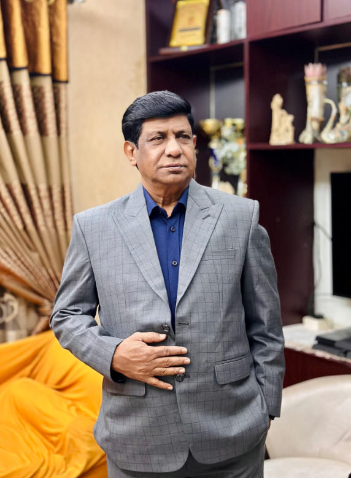

Meet Our Executive Director
Akram Hossain Rumi is the Executive Director of the Homeland Association for Social Improvement (HASI), a position he has held since 1996. He is also a practicing lawyer at the High Court of Bangladesh since 1992. With a career dedicated to humanitarian development, he has implemented numerous impactful projects in collaboration with national and international organizations like USAID, DANIDA, Embassy of Netherlands, Swiss Embassy, CARE Bangladesh, BRAC, and the Government of Bangladesh. His work spans diverse areas, including non-formal education, disaster management, food security, sanitation, microcredit, and women’s empowerment. He has initiated transformative programs such as post-literacy education, inclusive education for disabled children, and disaster recovery initiatives, including responses to Cyclone AILA. Akram holds an LLB from Rajshahi University (1988) and an LLM from Dhaka University (1991). His expertise is bolstered by specialized training in organizational development, governance, and disaster management, alongside international experience from workshops in Nepal and Thailand. A visionary leader, he is committed to empowering marginalized communities through education, economic opportunities, and sustainable development. With strong competencies in project management, data analysis, communication, and stakeholder collaboration, Akram continues to drive impactful, community-focused initiatives for sustainable progress.